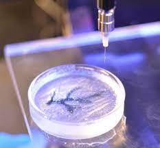
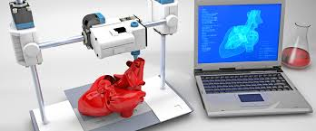

Introduction
Currently, hundreds of thousands of people are waiting for an organ transplant., but unfortunately, the world does not have enough donors to accommodate all the patients. And this is where the bioprinting of human tissue comes in. 3D bioprinting is an emerging branch of regenerative medicine, it is similar to 3D printing. However, bioprinting uses bio-ink, a printable material that contains living cells.

Materials or cells may be obtained from donors or, much better, from patients to lessen the chances of the body rejecting the printed tissue. Although printing thin tissues, like skin and meniscus, is the only successful project in the present, researchers are looking forward to the future of this technology.
Science Concepts Involved


Application and Conclusion
3D Bioprinting can be applied in medical related fields due to how convenient the tissue and organ prints can be. For instance, the tissue prints can be used to replace damaged tissue and organs, and potentially replace organ donors as the source of organs for many unfortunate patients. Since the donor’s organs have to have cells that are compatible with the patient, it would be a hassle to find one that is compatible, however with bioprinting, the cells can be taken from the patient himself and be used for the production of the tissue. The tissues made from bioprinting might also be used to replace human volunteers in drug testing labs as the printed tissue may mimic that of the average human being. Bioprinting however, isn’t limited to the medical field alone, as the printed tissue could be potentially used as an alternative to animals in testing labs, saving over hundreds of millions of animals.

In conclusion, 3D Bioprinting is an extension of regular 3D printing, making use of the latter’s technique of three-dimensional printing and incorporating biological materials, also known as bioinks, into the process. The bioinks can either be synthetic and natural in origin, and is usually used to mimic the biological structure of tissues and organs. The technology of bioprinting can be used in the medical field, with an example of this being the source of organs for patients to replace their damaged/missing organs, and for doctors to experiment and perform surgery on. Although the technology still isn’t perfect, it has already been proven to be fully functional and its still currently being refined continuously as more and more breakthroughs and improvements on how to improve its technology are found.
Members
Claire Blardony
Dianne Rosalejos
janna Orcelino
Sean Laderas
Vince Cagud
Leeand Suelto
References
Shafiee, A., Ghadiri, E., Ramesh, H., Kengla, C., Kassis, J., Calvert, P., Williams, D. R., Khademhosseini, A., Narayan, R. J., Forgacs, G., & Atala, A. (2019). Physics of bioprinting. Applied Physics Reviews, 6(2), 021315. https://doi.org/10.1063/1.5087206
Shafiee, A., Ghadiri, E., & Langer, R. (2022). Fabricating human tissues: How physics can help. Physics Today, 75(12), 38–43. https://doi.org/10.1063/pt.3.5138
Shafiee, A., Ghadiri, E., Ramesh, H., Kengla, C., Kassis, J., Calvert, P., Williams, D. R., Khademhosseini, A., Narayan, R. J., Forgacs, G., & Atala, A. (2019). Physics of bioprinting. Applied Physics Reviews, 6(2), 021315. https://doi.org/10.1063/1.5087206
Shafiee, A., Ghadiri, E., & Langer, R. (2022). Fabricating human tissues: How physics can help. Physics Today, 75(12), 38–43. https://doi.org/10.1063/pt.3.5138
Tappa, K., & Jammalamadaka, U. (2018, February 7). Novel biomaterials used in medical 3D printing techniques. PubMed Central (PMC).